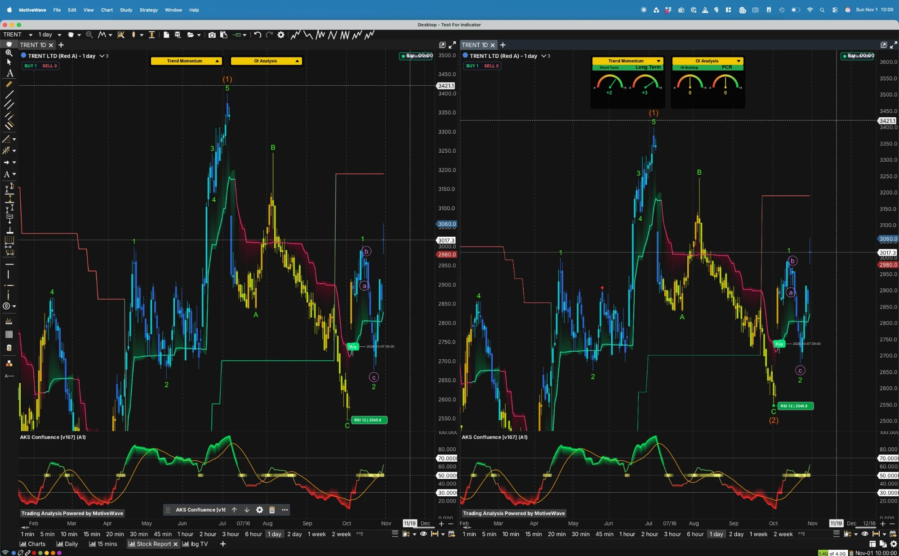

Consumer Discretionary — Apparel & Lifestyle Retail: Westside and Zudio (about 100% private label), Star (Tesco JV), Zara and Massimo Dutti JVs with Inditex, plus beauty, innerwear and footwear; Tata Group (37.01%)
Q2 FY27 revenue +22%, PAT +25% · P/E ~84 and P/B ~21x, PEG 3.5–11 on every basis · Tata Group 37.01%, AA+ (CARE, ICRA) · Chairman Noel Tata retires 11 Nov · ~12% below the ₹3,421.1 July high
₹3,017.30 ▲ +5.44%
Report date: 1 Nov 2026 (close of Fri 30 Oct; Q2 FY27 results came after the close on Thu 29 Oct) | Mkt Cap: ₹1,60,892 Cr | Book Value: 20.7x (Screener) / 22.92x (MarketSmith) | MarketSmith Master Score: C (62). MarketSmith shows +10.6% on the day against Screener’s +5.44% — conflict kept (§07).
● Sentiment: Improving after Q2; brokers mostly Buy, Citi Sell
● Governance: chairman change 12 Nov; Tata Sons backdrop
01
Company Overview
What They Do
Trent Limited is the Tata Group’s fashion and lifestyle retailer (Tata Group 37.01%, of which Tata Sons 32.45%). Westside (20,000–30,000 sq ft stores in about 100 cities; online is ~6% of Westside revenue) and Zudio (7,000–12,000 sq ft value-fashion stores, mostly tier-II/III, 300+ cities, price band ₹199–999 per a trade source) are both about 100% private label (ICRA). Newer categories — beauty and personal care, innerwear, footwear — were over 21% of revenue (CARE). Star is the 50:50 grocery/hypermarket JV with Tesco (Trent Hypermarket; 87 stores), alongside the loss-making Booker India. Zara (Trent’s stake reported at 34.94% from 30 Aug 2024; the final stake is not confirmed) and Massimo Dutti (20%) are JVs with Inditex, equity-accounted rather than consolidated line by line.
FY26 consolidated revenue was ₹20,074 Cr (+17.2%), operating profit (Ind AS 116) ₹3,745 Cr, net profit ₹1,721 Cr (+12.2%) and EPS ₹32.25 (post-bonus). Q2 FY27 (reported Thu 29 Oct after market hours): consolidated revenue ₹5,873 Cr (+21.9%), PAT ₹468.09 Cr (+25.3%), operating (pre-Ind AS) EBITDA ₹785 Cr (+37%), EPS ₹8.70; standalone revenue ₹5,788 Cr (+23%) but standalone PAT only ₹490 Cr (+9%). The network stood at 1,342 stores in 339 cities (18.57m sq ft) ex-Star at 30 Sep 2026. A 1:2 bonus (record date 4 Jun 2026) lifted equity capital from ~₹35.5 Cr to ₹53.3 Cr; all per-share data here are post-bonus. CARE AA+/Stable (12 May 2026) and [ICRA]AA+ (Stable) (7 May 2026). Landmark could not be verified as a Trent format and is not included.
Key Competitive Advantage: Two private-label value and mid-market formats at scale — Zudio just crossed 1,000 stores — funded by a Tata balance sheet at AA+ with low gearing (0.36x including leases, CARE). The edge is brand, sourcing and rollout execution, not legal IP: entry barriers in branded apparel are low (CARE), competitors are copying the Zudio format, and revenue per sq ft is falling as area grows. Detail in §02.
Store Mix by Format (30 Sep 2026)
Store counts at 30 Sep 2026 (Angel One / Daily Pioneer / Quartr): Zudio 999 (the company says the 1,000th store opened in the quarter), Westside 311, other lifestyle 32 = 1,342 ex-Star (matches the reported 1,342), plus Star 87 = 1,429 (my sum). Store count, not revenue — the revenue split between Westside and Zudio was not found. Basis conflicts: Zudio 999 vs 1,000; Q1 base of 1,312 (Quartr) vs 1,293 (ICICI Securities) — not reconciled. H1 FY27 net adds: Westside +11, Zudio +36.
Earnings-Quality Rating: Where The Profit Comes From
Quality rated 3 / 5 ■■■■■ (my judgement)
Bull: Q2 operating EBITDA grew ~37% on 22% revenue growth; gross margin 44.5% (+120 bp); operating cash flow ₹2,668 Cr in FY26 (Screener) is ~1.55x net profit (my arithmetic; CARE shows ₹3,063 Cr); CARE interest cover 21.82x; sales are cash-based (collection cycle 1–2 days, CARE).
Bear: standalone PAT rose only 9% in Q2 and consolidated PAT fell sequentially (₹518 Cr to ₹468 Cr on Screener’s consolidated line); JV and associate losses sit below the operating line; the Ind AS 116 operating profit (₹3,745 Cr) is ~₹1,043 Cr above the pre-Ind AS EBITDA (₹2,702 Cr) — lease cost is ~28% of the headline figure (my arithmetic); FY24 profit was lifted by a one-time gain (other income ₹695 Cr in Q4 FY24), so FY24-based growth is flattered (§09).
02
Competitive Advantage (Moat) Analysis
Dimension
Rating
Commentary
Brand Strength
4 / 5 · Strong
Westside has a “strong brand connect with a loyal customer base” (ICRA); Zudio is price-led and ~100% private label, now 999–1,000 stores. Brand strength is real in value and mid-market fashion, but CARE notes low entry barriers in branded garments. Rating is my judgement from the evidence.
Network Effects
1 / 5 · Weak
None identified. Cluster density helps catchment and logistics (ICRA says cluster expansion “mitigated customer attrition”), but cannibalisation shows density has a ceiling.
Switching Costs
1–2 / 5 · Low
Apparel is discretionary and low-priced; customers move freely between Zudio, Max, Reliance’s Yousta and Style Up. Club Westside loyalty data and Tata Neu integration: not found.
Cost Advantage / Barriers
3–4 / 5 · Moderate–High
Scale in sourcing, ~100% private label (gross margin 44.5% in Q2 FY27, +120 bp despite inflation), automation and warehousing that cut inventory days (ICRA), Tata funding and AA+ ratings. Against that, CARE says barriers to entry in branded apparel are low, and vendor concentration, import share and sourcing geography were not found.
Patents / Proprietary Tech
1–2 / 5 · Weak
Trademarks only; no patents found. Trent holds Bombay High Court injunctions on the Zudio mark against infringers (Jan 2024 and later) — a protection action, not a regulatory one. The moat is know-how, sourcing and rollout, not legal IP.
What This Moat Does NOT Protect Against
Productivity: retail area grew 26–32% while revenue per sq ft fell — standalone ₹12,682 in FY26 vs ₹14,964 in FY24 (−15.2%, my arithmetic); Q2 FY27 per-sq-ft prints are −8% (company), −8.4% (Citi), −3% (Bernstein) and store sales −1.7% (Goldman). ICRA says same-store growth is “constrained due to cannibalisation” and names pressure on like-for-like sales and delayed new-store break-even as downgrade factors. Competition: Reliance’s Yousta and Shoppers Stop’s Intune are reported as Zudio challengers (store counts and the claim that they slowed Zudio’s same-store growth are unverified secondary items), ABFRL launched Style Up, and the unorganised sector is over 57% of value fashion (secondary). CARE also names Lifestyle International, Amazon, Flipkart and Myntra. Inventory: bought outright, not sale-or-return, so a slowdown means markdowns (CARE); stock over 365 days is fully provided for (ICRA). Input costs and West Asia: Jefferies and Citi flag a possible H2 FY27 margin squeeze; cotton and polyester sensitivity was not quantified. Funding of loss-makers: Booker India and Star Bazaar losses need regular support (CARE), and “significantly higher-than-anticipated support to subsidiaries/JVs” is a CARE downgrade trigger. Policy: GST on apparel since 22 Sep 2025 is 5% up to ₹2,500 per piece and 18% above; Crisil estimated ~200 bp lift for organised apparel retailers (late-2025 evidence only; no 2026 update found). Zudio, below the threshold, is the likely beneficiary; Westside has some exposure; nothing quantifies the effect on Trent.
Litigation & Contingent Liabilities (standalone)
Contingent liability (₹ Cr, FY26)
FY26
FY25
Income tax
32.46
46.98
Indirect tax
1.55
—
Claims not acknowledged as debts
9.29
—
Sum of the three (my arithmetic)
43.30
—
Aggregator total (Anand Rathi)
97.88
—
Source: Goodreturns notes to accounts / Anand Rathi (secondary, not checked against the annual report note). The three components sum to ₹43.30 Cr, but the aggregator total of ₹97.88 Cr does not reconcile — shown, not resolved. Disputed statutory dues in the auditor’s CARO annexure are small (income tax FY19 ₹4.55 Cr; GST FY19 ₹0.24 Cr, FY21 ₹1.05 Cr, FY22 ₹0.08 Cr). A larger, unprovided risk sits in the JVs: Inditex Trent Retail India and Massimo Dutti India face a Customs Special Valuation Branch inquiry (a 5% loading order of Mar 2025 is contested, no provision) — not in Trent’s own contingent liabilities. No SEBI or exchange penalty found; ASM/GSM lists not checked directly.
Synthesis: A moderate-to-strong moat built on scale, private label and Tata funding — not on legal or network barriers. The AA+ ratings are consistent on both agencies’ reviews, but both lean on Tata Sons’ expected support (ICRA lists an adverse change in that support as a downgrade factor), and productivity per sq ft is moving the wrong way. India Ratings, CRISIL and Acuité ratings of Trent were not found (§16). Moat ratings are mine.
03
Q2 Re-acceleration vs Profit Conversion, the Valuation / PEG Question, and the Chairman Change & Tata Sons Backdrop
Q2 revenue (cons.)
₹5,873 Cr
+21.9% YoY, mid-single-digit LFL
Q2 PAT (cons.)
₹468.09 Cr
+25.3% YoY; ₹518 Cr in Q1 (Screener)
Q2 PAT (standalone)
₹490 Cr
+9% YoY on a high base
P/E (TTM)
84.0x
Screener; 5-yr range 90–497 (MarketSmith)
PEG (my arithmetic)
3.5–11
no published PEG found (§09)
Chairman change
12 Nov
Noel Tata out, Bahram Vakil in
Theme 1 — Q2 Re-acceleration vs Profit Conversion
The bull read: consolidated revenue growth stepped up to +21.9% from +17.9% in Q1 and +14.8% in Q3 FY26 (Screener, my arithmetic), operating EBITDA grew ~37%, gross margin widened 120 bp, like-for-like growth moved to mid-single-digit, Zudio opened its 1,000th store and Star grew 20%. Brokers mostly stayed bullish after the result (§12).
The bear read: profit conversion is weaker than the headline. Standalone PAT rose 9% on 23% revenue growth; consolidated PAT fell sequentially from ₹518 Cr to ₹468 Cr (Screener, my arithmetic: −9.7%) on JV/associate losses, and standalone PAT fell from ₹531.8 Cr to ₹490 Cr (−7.9%). Citi says other income fell 71%. Revenue per sq ft is still falling (−3% to −8.4% by source) with area up 26%, and mid-single-digit like-for-like is a modest base for a stock at 84x earnings.
Conflicts kept: the “sequential PAT ₹532 Cr → ₹468 Cr” quoted in coverage compares ICICI’s standalone Q1 figure (₹531.8 Cr) with the consolidated Q2 figure; on Screener’s consolidated line Q1 was ₹518 Cr. Four Ind AS EBITDA figures for Q2 (₹1,054–1,078 Cr) and two EBIT-margin pairs are shown above, not resolved. The standalone PAT growth is distorted by ₹96 Cr of pre-tax asset-sale gains in Q2 FY26: if those were taxed at ~25% (an assumption), the ex-gain base is ~₹378 Cr and standalone PAT growth is roughly +29% (my arithmetic, illustrative).
Q2 FY27 at a Glance (secondary reports of the filing)
The investor presentation, call transcript and results filing were not retrieved; Q2 numbers are from Upstox, Daily Pioneer, Incred Money, Goodreturns, Quartr and Screener. One aggregator showed PAT near ₹528 Cr and revenue ₹5,785 Cr, which looks like standalone or mixed data and is ignored.
Theme 2 — Valuation vs Growth (PEG)
At a P/E of 84.0 (Screener, 30 Oct; MarketSmith 85) the PEG is about 7.5 on last year’s EPS growth (+11.2%), ~11 on the two-year FY24→FY26 CAGR (+7.6%, from a base flattered by a one-time FY24 gain), ~3.5 on ICICI Securities’ forward EPS CAGR (+23.8%) and 5.6 / 4.6 on Motilal Oswal’s FY27E / FY28E growth (14.9% / 18.3%). No published PEG was found; it is high on every basis (3.5–11). The multiple has compressed a lot — today’s 85 sits below the bottom of MarketSmith’s five-year P/E range of 90–497 — but it is still high in absolute terms. Full table and inputs in §09 (all my arithmetic).
Theme 3 — Chairman Change & the Tata Sons Backdrop
Event: Noel Tata, chairman since Mar 2014 (on the board since Aug 2010), retires as chairman and director on 11 Nov 2026 and becomes Chairman Emeritus from 12 Nov; Bahram Vakil takes the chair on 12 Nov. Secondary reports cite the Tata Group’s director-retirement guidelines. Vakil (67, co-founder of AZB & Partners) was an independent director of Trent from 2012 to 2022 and rejoined on 23 Apr 2026 as a non-independent non-executive director; his appointment drew 94.84% votes in favour (5.16% against, cause not stated). His background is legal, insolvency and project finance — no retail operating experience (per the AGM notice; the no-retail-experience point is my reading). Operations stay with MD P. Venkatesalu (MD since 6 Oct 2024). Two further directors — Rajiv Dube (non-independent) and Kalpana Merchant (independent, term to 29 Oct 2029) — were proposed on 29 Oct (secondary reports; shareholder approval pending).
Tata Sons backdrop (secondary, latest items to Apr 2026): a rift on the Tata Trusts side (Oct 2025 vote against trustee Mehli Mistry, now before the Maharashtra Charity Commissioner) and the unresolved question of Tata Sons’ “upper-layer NBFC” classification and possible listing (an RBI draft of 10 Apr 2026 would keep it there on asset size). Trent’s promoter holding of 32.45% sits with Tata Sons, and both rating agencies tie their uplift to Tata Sons’ support. I found nothing that names Trent directly, and nothing newer than April 2026 on the Tata Sons decision.
Read: a board-level transition planned by group policy, with a continuity MD, is not in itself a warning. The two things to watch are whether the new chair’s legal-and-finance profile changes capital allocation (the ₹2,500 Cr equity raise is approved but unpriced) and whether any Tata Sons restructuring touches the support the AA+ ratings assume.
Source-quality note: read in full: the CARE rationale (12 May 2026) and the ICRA rationale (7 May 2026). Read for governance: the FY26 annual report, the AGM notice and the scrutinizer’s report (23 Jun 2026). Valuation and financial tables: Screener (30 Oct close; consolidated and standalone pages retrieved 1 Nov 2026), Motilal Oswal (22 Apr 2026) and ICICI Securities (7 Aug 2026) notes. Q2 FY27 numbers are from secondary reports of the filing (Upstox, Daily Pioneer, Incred Money, Goodreturns, Quartr); the investor presentation, call transcript and results filing were not retrieved. Items from search snippets (several broker targets, the Zudio 5,000-store plan, the Tata Sons listing backdrop) are headline-only. Items I computed are marked “my arithmetic”. Conflicts are shown, not resolved.
04
Overall Sentiment & Momentum Prediction
Key Watch-Item
⚠ Can the post-result bounce clear ₹3,060 — and does Q3 show profit conversion catching up with revenue?
The stock closed ₹3,017.30 on 30 Oct (Screener +5.44% from ₹2,861.70; MarketSmith prints +10.6%, a base that conflicts) on volume of 7.41 mn shares (+62.9% vs average). The intraday high was ~₹3,060 — the same level the chart marks as resistance. Three dates matter next: 12 Nov (Vakil becomes chairman), the Q3 business update (early Jan 2027) and Q3 results (~4 Feb 2027; both my inference from past dates, not company-confirmed). V-Mart reports on 3 Nov — a read-through for value fashion.
Overall Sentiment
IMPROVING but valuation-capped
MarketSmith Master Score C (62): EPS 88 GOOD, Price Strength 72 FAIR, Buyer Demand B+, Group Rank 48 of 197. Brokers after Q2: Elara upgraded to Buy (₹3,600), MOSL Buy (₹3,700), HSBC Buy (₹3,480), Nuvama Buy (₹3,466, cut), Systematix Hold (₹3,242, cut), Citi Sell (₹2,950). Early-October count: 22 Buy / 5 Hold / 2 Sell of 29 (a search summary). Domestic institutions absorbed foreign selling (DII 13.18% → 23.34%); FIIs ticked up for the first time to 15.28%.
Momentum Prediction
1D POSITIVE · HURDLE ₹3,060
Daily Trend Momentum gauges +2 short-term / +3 long-term; Buy signal 7 Oct (BUY 1 / SELL 0); open-interest gauges neutral. RSI printed 12 at the ₹2,545.8 October low (wave C of the labelled count). Nearest hurdles ₹3,060 then ₹3,421.1; supports ₹2,980 / ₹2,690 / ₹2,545.8. A reading, not a forecast.
Framing note: A fast-growing, high-return retailer whose stock has already de-rated from over 120x earnings and sits ~12% below its July high, but still at ~84x earnings and ~21x book with a PEG of 3.5–11. The bull case (Q2 re-acceleration, AA+, Zudio at 1,000 stores, post-result broker support, domestic institutions absorbing foreign selling) and the bear case (profit growth lagging revenue, falling revenue per sq ft, JV losses, slowing net adds against guidance, a chairman transition, H2 input-cost risk, a Citi Sell) are both live. The price path is event-driven: −12% on the Q1 update (7 Jul), +11% intraday on the Q2 update (early Oct), +5.4% on the results.
05
Sector Market Size
Market-size figures were not found (organised vs unorganised apparel share, category size, 1-year retail-index return on one date). What exists: growth prints — Trent standalone Q2 FY27 revenue +23% (Q1 +18.5%); V-Mart Q2 revenue +18% to ₹953 Cr with same-store sales +3% (core V-Mart +2%, Unlimited +11%; +11% adjusted for the festive calendar; FY27 guide 18–20% revenue, 5–7% same-store); Vedant Fashions Q1 revenue +7.2% (domestic same-store ~3.8%). Trent’s 23% is total revenue, not same-store, so the comparison with V-Mart is not like for like. Shoppers Stop Q2: not found.
Q2 FY27 Revenue per Sq Ft, by Source (%)
Company (via Kotak Neo) −8% on a same-new-store-size TTM basis; Citi −8.4%; Bernstein −3%; *Goldman is sales per store −1.7% (Q1 −5.6%), a different metric. Retail area grew +26% (Bernstein). Standalone annual revenue per sq ft (MOSL): FY22 ₹8,801, FY23 ₹13,592, FY24 ₹14,964, FY25 ₹14,521, FY26 ₹12,682. Policy: GST on apparel since 22 Sep 2025 — 5% up to ₹2,500 per piece, 18% above; Crisil (Oct 2025) put the lift at ~200 bp for organised apparel growth of 13–14%; premium apparel above ₹2,500 saw softer demand and sub-₹2,500 did better (festive survey as reported) — late-2025 evidence only, no 2026 update found. Demand: CARE (May 2026) says the West Asia escalation pushed spending toward essentials and away from fashion and beauty; Q2 FY27 did not show a revenue slump. Sector index: Nifty India Consumption −2.44% (3 Jun 2026) vs −0.33% (undated) — a broad consumption index, not a retail one, and the two readings differ. Cotton and polyester price trends, rents, quick-commerce and Meesho/Shein effects: not found.
06
Shareholding — 4 Qtrs
Category
Dec'25
Mar'26
Jun'26
Sep'26
Δ (3 qtrs)
Promoters (Tata Group)
37.01%
37.01%
37.01%
37.01%
flat
FIIs
15.62%
15.59%
15.14%
15.28%
▼ 0.34pp
DIIs
21.37%
22.19%
23.07%
23.34%
▲ 1.97pp
Public / others
25.87%
25.03%
24.57%
24.39%
▼ 1.48pp
Mutual funds (MarketSmith)
14.19%
13.92%
14.64%
14.57%
▲ 0.38pp
Source: Screener (1 Nov 2026) for promoters, FIIs, DIIs and public; mutual-fund row from MarketSmith (a sub-set of DIIs). Rows do not sum to 100% (Screener’s ‘Government’ line showed 0.19% in Jun-26 and 0.00% in Sep-26, which looks like a reclassification). Longer view: FIIs 27.87% (Jun-24) → 21.68% (Dec-24) → 15.14% (Jun-26) → 15.28% (Sep-26, the first rise in the series); DIIs 13.18% → 23.34% — domestic institutions roughly doubled their stake and absorbed the foreign selling. Shareholders: 2.47 lakh (Jun-24) → 5.10 lakh (Sep-26). Promoter holding is unchanged at 37.01% since Dec 2023. Pledge: not found — the annual report shows no encumbrance disclosure but the exchange shareholding filing was not opened, so “no pledge” is not confirmed. Aggregator figures that differ (Angel One DII 19.98%, Choice 1.96%) look stale and are ignored.
Major Holders (MarketSmith, Sep-26)
Holder
Stake
Tata Sons Private Limited (promoter)
32.45%
Siddhartha Yog
4.53%
Tata Investment Corporation Limited
4.28%
LIC Index Plus Flexi Growth Fund (printed ‘Lici’)
3.53%
ICICI Prudential Nifty ETF
2.67%
Nippon India Nifty 500 Equal Weight Index Fund
2.59%
Pie as printed: ~37% / 15% / 6% / 15% / 14% / 13%. One 6 Aug 2026 block of ₹30.91 Cr at ₹3,073 had unidentified parties (§13).
07
Stock Performance
Return
Source
Value
Close 30 Oct vs 29 Oct (₹2,861.70)
Screener / Goodreturns
+5.44%
Same day, MarketSmith print (+₹289.80)
MarketSmith
+10.6%
From 5 Oct close ₹2,580
My arithmetic
+16.9%
From ₹2,545.8 October C-low
My arithmetic
+18.5%
From ₹3,421.1 July high (chart)
My arithmetic
−11.8%
From ~₹3,709 post-bonus record high
My arithmetic (₹5,563 ÷ 1.5)
−18.6%
From Screener 52-wk low ₹2,184
My arithmetic
+38.2%
1 year (price CAGR line)
Screener
≈ −4%
1 year (as of 28 Oct)
5paisa
−8.92%
Different vendors and dates; not averaged. The 1-year figures conflict (−4% vs −8.92%); a same-date sector-relative return was not found. Pre-June prices are unadjusted for the 1:2 bonus unless stated (record high ₹5,563 per Kotak Neo is pre-bonus).
52-Wk High₹3,400 / ₹3,785 / ₹3,421.1Screener ₹3,400 (MarketSmith OH −11.25% implies ~₹3,400) vs ICICI Securities (7 Aug) ₹3,785 and an Anand Rathi 28 Aug range top of ₹3,783 vs the chart’s ₹3,421.1 July high. Sources disagree; shown, not resolved. Price is ~11.8% below the chart high
52-Wk Low₹2,184 / ₹2,185 (chart C-low ₹2,545.8)Screener ₹2,184; ICICI ₹2,185; MarketSmith OL +37.48% implies ~₹2,195. The ₹2,545.8 chart low is the October wave-C low, higher than the 52-week low
Path: ₹3,421.1 high (early–mid Jul) → −12% intraday on the Q1 update (7 Jul; revenue growth ~19% vs ~22% expected) → Q1 results 6 Aug (block ₹30.91 Cr at ₹3,073) → ₹2,853 (4 Sep), ₹2,802.40 (11 Sep) → ₹2,580 close (5 Oct) → up to +11% on the Q2 update (early Oct) → ₹2,545.8 C-low (October) → ₹2,913.90 (28 Oct) → ₹2,861.70 / ₹2,866 (29 Oct, results after the close) → ₹3,017.30 (30 Oct; intraday high ~₹3,060). Before the 30 Oct jump the stock was ~7% below its three-month peak (BusinessToday). Intraday 30 Oct snapshots conflict (₹3,059 +6.73% vs ₹3,035.60 +6.08%) and a 31 Oct close does not exist — 31 Oct 2026 was a Saturday.
Attributable to owners (Upstox: ₹464 Cr, +23%) · PBT before JV share ₹640.12 Cr (Quartr) vs Screener ₹619 Cr
₹8.70
EPS vs ₹7.07 (Screener) · standalone ₹9.18
Other income ₹26 Cr vs ₹28 Cr a year ago (Citi: other income down 71% on the standalone base). Gross margin 44.5% (+120 bp). Stores 1,342 ex-Star (Westside 311, Zudio 999–1,000, other lifestyle 32) plus Star 87. Like-for-like mid-single-digit; revenue per sq ft −3% to −8.4% by source. H1 FY27: revenue ₹11,628 Cr (+20%), PAT ₹986 Cr (+24%), operating EBITDA ₹1,633 Cr (+35%). The ~₹21 Cr gap between pre-JV PBT (₹640.12 Cr) and Screener PBT (₹619 Cr) is presumably the JV/associate loss share (my arithmetic).
Screener 84.0 · MarketSmith 85 · TTM EPS ₹35.56 → 84.8x on ₹3,017 (84.9x on ₹3,017.30; my arithmetic) · 5-yr range 90–497 (MarketSmith) — today is below the bottom
Forward P/E
~70x
₹3,017.30 ÷ ICICI Securities FY27E standalone EPS ₹43.0 (7 Aug; my arithmetic = 70.2x); FY28E ₹57.1 → 52.8x. MarketSmith FY27e/FY28e rows not used (§17)
P/B
20.7x
Screener (BV ₹146; my arithmetic) · MarketSmith 22.92x — bases differ, both shown
Screener borrowings ₹2,561 Cr ÷ net worth ₹6,985 Cr, Mar-26 (my arithmetic) — close to CARE’s 0.36x gearing incl. leases, so the line likely includes leases (my inference) · MarketSmith LT debt/equity 9%, ‘debt free’
Screener consolidated (retrieved 1 Nov 2026); EPS restated for the 1:2 bonus. Op. profit is Ind AS 116; OPM and YoY are my arithmetic; TTM net profit is the sum of the last four Screener quarters (₹510 + 413 + 518 + 468 Cr). Conflicts shown, not resolved: revenue FY24 ₹12,360.07 Cr (CARE) vs ₹12,375 Cr (Screener); FY25 ₹17,118.26 Cr (CARE) vs ₹17,134.6 Cr (ICRA, Quartr) vs ₹17,135 Cr; FY26 ₹20,074.21 Cr (CARE, ICRA) vs ₹20,075.87 Cr (an aggregator). Operating profit FY26: ₹3,745 Cr (Screener) vs PBILDT ₹3,673.39 Cr (CARE, 18.30%) vs ICRA OPBDIT 18.6%. PAT FY26: ₹1,721.33 Cr (CARE) vs ICRA’s ₹1,717.4 Cr before JV/associate share. Pre-Ind AS (operating) EBITDA, company-reported via press: FY26 consolidated ₹2,702 Cr (+25%), standalone ₹2,687 Cr (+27%); Q4 FY26 ₹653 Cr (+44%); FY22–FY25 consolidated pre-Ind AS EBITDA not found. One-offs: a one-time gain lifted FY24 profit (other income ₹695 Cr in Q4 FY24 vs ~₹100 Cr in nearby quarters; amount of the gain not found, and the FY24 excess over trend is my rough arithmetic only); FY26 Q3 exceptional expense ₹25.8 Cr (labour-code impact, MOSL; ICICI ₹19.1 Cr post-tax); Q2 FY26 consolidated exceptional expense ₹26.11 Cr (Incred); standalone pre-tax asset-sale gains of ₹96 Cr in Q2 FY26 and ₹109 Cr in H1 FY26. FY22–FY26 sales CAGR is 45% (my arithmetic) but starts from a pandemic-hit base.
Quarterly Trend — Last 9 Quarters (Screener, consolidated)
Quarter
Sales
YoY
Op. profit
OPM%
Other inc.
Net profit
NP YoY
EPS (₹)
Sep-24
4,157
—
646
16%
51
335
—
6.35
Dec-24
4,657
—
847
18%
80
497
—
9.33
Mar-25
4,217
—
651
15%
74
312
—
5.97
Jun-25
4,883
—
848
17%
50
425
—
8.06
Sep-25
4,818
+15.9%
816
17%
28
373
+11.3%
7.07
Dec-25
5,345
+14.8%
1,081
20%
5
510
+2.6%
9.62
Mar-26
5,028
+19.2%
911
18%
28
413
+32.4%
7.51
Jun-26
5,755
+17.9%
1,119
19%
30
518
+21.9%
9.73
Sep-26
5,873
+21.9%
1,057
18%
26
468
+25.5%
8.70
Screener consolidated, 1 Nov 2026; YoY columns are my arithmetic on Screener figures (earlier quarters have no prior-year column in the supplied nine). MarketSmith’s EPS column runs ~₹0.03–0.04 higher in several quarters (Sep-25 7.10, Dec-24 9.37, Mar-25 6.00, Jun-25 8.10, Dec-25 9.66, Mar-26 7.54) — a different attributable-profit basis is possible but unconfirmed. TTM EPS check: 9.62 + 7.51 + 9.73 + 8.70 = ₹35.56 (matches Screener); MarketSmith’s four = ₹35.63. Revenue growth by quarter: +15.9%, +14.8%, +19.2%, +17.9%, +21.9% (Sep-25 to Sep-26) — Q2 FY27 is the fastest of the five; net-profit growth of +2.6% in Dec-25 shows how uneven conversion has been.
Sales (₹ Cr) — FY22–FY26 + TTM
Op. Profit, Ind AS (navy) & Net Profit (green) — ₹ Cr
▬ Operating profit (Ind AS 116) ▬ Net Profit — TTM = Dec-25 to Sep-26
Annual P&L — Standalone (Screener, 1 Nov 2026)
Year
Sales
Op. profit
OPM%
Other inc.
Net profit
EPS (₹)
FY22
3,881
651
16.8%
265
250
4.68
FY23
7,715
1,155
15.0%
412
555
10.40
FY24
11,927
1,973
16.5%
894
1,436
26.93
FY25
16,668
2,812
16.9%
329
1,585
29.72
FY26
19,701
3,705
18.8%
349
1,968
36.91
Standalone FY26 PAT (₹1,968 Cr; EPS ₹36.91) is above consolidated (₹1,721 Cr; ₹32.25): the ₹247 Cr gap (my arithmetic) is the loss share of JVs/associates and subsidiaries. Standalone PAT is the same ₹1,967.8 Cr in ICICI and MOSL.
Revenue ₹5,666 Cr (+18.5%); Ind AS EBITDA ₹1,110.6 Cr (19.6%); PAT ₹531.8 Cr
ICICI, 7 Aug; consolidated Q1 PAT ₹518 Cr
★ Margin and growth read (my arithmetic): consolidated revenue grew from ₹4,498 Cr (FY22) to ₹20,074 Cr (FY26) and Ind AS operating margin from 13.2% to 18.7%; growth has slowed each year (+83%, +50%, +38%, +17%) while the TTM figure (+18%) has stabilised and Q2 FY27 re-accelerated to +21.9%. Depreciation (mostly Ind AS 116 lease depreciation) rose from ₹895 Cr to ₹1,361 Cr in FY26 (+52%) against sales +17%, which is why net profit grew 12% on 17% sales growth. Net margin was 8.6% in FY26 and 8.0% in Q2 FY27 (my arithmetic).
★ Cross-checks: MarketSmith market cap ₹1,60,892.09 Cr ÷ ₹3,017.30 = 53.3 Cr shares, consistent with the post-bonus ₹53.3 Cr equity capital at ₹1 face value. TTM sales ₹22,001 Cr (Screener) vs ₹22,000.90 Cr (MarketSmith): match. Float 33.59 Cr shares = 63.0% of 53.3 Cr, consistent with 37.01% promoters (my arithmetic). MarketSmith’s “annual revenue growth +16%” (rated outstanding) and “EPS growth rate 85%” describe the past; the last-year EPS growth on the annual line was +11.2%.
09
Key Ratios — Industry-Contextualized
P/CFO · Market Cap ÷ Operating Cash Flow HIGH, TWO CFO BASES
FY26 operating cash flow ₹2,668 Cr (Screener)
Consolidated CFO: FY25 ₹1,661 Cr, FY26 ₹2,668 Cr (Screener); CARE shows ₹3,063 Cr for FY26 and ICRA “above ₹3,000 Cr” — definitions differ and are shown, not resolved. P/CFO = 1,60,892 ÷ 2,668 ≈ 60.3x (≈ 52.5x on CARE’s figure; my arithmetic). Screener’s capex-related free cash flow was ₹799 Cr (FY25) and ₹931 Cr (FY26): an FCF yield of ~0.58% on today’s market cap (my arithmetic). MOSL (standalone) defines it differently — operating cash flow after interest and leases ₹1,680 Cr (+67%), net capex ₹1,480 Cr (vs ₹820 Cr), FCF only ~₹190 Cr, stable YoY — which is the gap that matters for a lease-heavy retailer (the difference between the two FCF figures is presumably lease and interest payments; my inference). ICRA expects capex of ₹1,500–1,700 Cr a year.
Working capital (conflicting bases): inventory days 42 (MOSL, standalone; 44 a year earlier) vs 74 (Screener, consolidated; 77 in FY25); CARE operating cycle 25 days (27 in FY25); ICRA inventory holding 60–70 days over three years and NWC/operating income 6.3% (8.2% in FY24). Inventory is bought outright; stock over 365 days is fully provided for.
P/B & Return Ratios Rich vs book; high returns
20.7x (ROE 27.7% · ROCE 28.3%)
The market pays ₹3,017 for ₹146 of book, ~20.7x (Screener basis; MarketSmith shows 22.92x on its own basis) on an ROE of 27.7% — returns are genuinely high, but the multiple prices years of compounding. Alternatives: ROE 24% / 25% (MarketSmith), 29.2% (ICICI), 28.0% (MOSL); ROCE 27.2–27.9% on other sources and 20.5% at MOSL. Peer P/B: DMart 8.0x, Vedant 7.6x, Shoppers Stop 14.2x (§15).
Leverage, bases that differ: Screener borrowings ₹2,237 Cr (Mar-25), ₹2,561 Cr (Mar-26), ₹2,328 Cr (Sep-26) — probably including leases; ICICI debt ₹948 Cr and cash ₹787 Cr; CARE and ICRA cash and liquid investments ₹930 Cr with ICRA’s NCDs of ₹499.9 Cr the only borrowing (due 29 May 2026 — repayment not confirmed; CARE assigned a new ₹500 Cr NCD on 12 May); MOSL net cash ~₹290 Cr (FY26) vs ~₹340 Cr (FY25); cash ₹181.26 Cr at Sep-26 vs ₹281.36 Cr at Mar-26 (Incred). CARE gearing 0.36x including leases (0.41x, 0.44x earlier), interest cover 21.82x (ICRA 16.2x — different definitions), total debt/PBILDT 0.7x. Lease liabilities: not found.
PEG — Price/Earnings to Growth (my arithmetic, P/E 84.0 on TTM EPS ₹35.56)
Growth basis
Inputs
Growth
PEG @ P/E 84.0
Read
(1) Last-year EPS growth
FY26 ₹32.25 vs FY25 ₹29.01 (Screener consolidated; MarketSmith ₹32.41 vs ₹29.15)
+11.2%
≈ 7.5
FY26 profit growth lagged revenue growth (+17.2%)
(2) 2-year EPS CAGR, FY24→FY26
₹27.88 → ₹32.25
+7.6%
≈ 11
Flattered base: FY24 EPS was lifted by a one-time gain (other income ₹695 Cr in Q4 FY24; amount not found), so the true underlying CAGR is probably higher and the PEG lower — the sign of the distortion is known, the size is not
(3a) Forward — ICICI Securities (7 Aug 2026)
Standalone EPS FY26 ₹37.3 → FY28E ₹57.1; PAT CAGR 23.8% (+23.7% on the EPS pair)
+23.8%
≈ 3.5
On FY27E EPS ₹43.0 the P/E is 70x (my arithmetic); standalone, so it overstates the consolidated base
(3b) Forward — MOSL FY27E (22 Apr 2026)
Consolidated EPS growth, pre-bonus basis (growth rates unaffected by the bonus)
+14.9%
≈ 5.6
Older note; written before the 1:2 bonus and before Q1 and Q2
(3c) Forward — MOSL FY28E
Consolidated EPS growth
+18.3%
≈ 4.6
As above
MarketSmith estimate rows
FY27e ₹63.43 (+95.71%), FY28e ₹68.18 (+7.49%)
n.m.
shown, NOT used
Internally inconsistent: 63.43 ÷ 1.5 ≈ ₹42.3 matches ICICI’s post-bonus FY27E, so the rows mix bonus bases; FY28e is then only +7.5% on FY27e
Inputs and limits:no published PEG was found; PEG is high on every basis, ranging 3.5 (ICICI forward) to ~11 (two-year CAGR). Basis: consolidated P/E 84.0 (Screener, 30 Oct; MarketSmith 85; price ÷ TTM EPS ₹35.56 = 84.8–84.9). All EPS are post-bonus. Growth (3a) is one broker’s standalone forecast, not a consensus; (3b)/(3c) are older and pre-bonus. For scale: a PEG of 2 at this P/E would need ~42% annual EPS growth (84 ÷ 2; my arithmetic) against ~24% in the most optimistic forecast shown. Context: the multiple has compressed sharply — MarketSmith’s five-year P/E range is 90–497 and today’s 85 sits below its bottom; the stock has also fallen from over 120x (DSIJ, Whalesbook) — so the de-rating is real even though 84x is still high in absolute terms.
Balance sheet (₹ Cr, Mar-25 → Mar-26 → Sep-26, consolidated, Screener): net worth (equity plus reserves) 5,462 / 6,985 / 7,769 (+27.9% in FY26, my arithmetic); borrowings 2,237 / 2,561 / 2,328; investments 1,480 / 1,385 / 1,513; other liabilities 1,721 / 2,183 / 2,505. Inventory days 42–74 depending on source (above). ROE check: FY26 profit ₹1,721 Cr ÷ average net worth ₹6,224 Cr = 27.7% (my arithmetic; matches Screener). Contingent liabilities: small (§02).
Capex, funding and dividends: ICRA expects capex of ₹1,500–1,700 Cr a year. The board approved on 22 Apr 2026 an equity raise of up to ₹2,500 Cr, preferably a rights issue; no pricing, timeline or launch was found (that is ~1.6% of market cap and ~32% of Sep-26 net worth; my arithmetic). Dividend: ₹6 per pre-bonus share for FY26 (₹213.29 Cr, ~12.4% of consolidated PAT per the governance stream vs ~8% on Screener’s payout line — conflict kept) and ₹5 for FY25 (₹177.74 Cr). Screener payout history: FY22 57%, FY23 18%, FY24 8%, FY25 11%; dividends per share FY22–FY24 not extracted. Yield 0.13%.
10
Management Metrics
Executive Pay vs Profit
₹14.77 Cr
MD P. Venkatesalu, FY26: basic ₹2.93 Cr, perquisites ₹3.27 Cr, bonus/incentives incl. LTIP 2022 ₹8.43 Cr, retirals ₹0.15 Cr — ~0.86% of consolidated PAT ₹1,721 Cr (my arithmetic); 420.9x median employee pay; no stock options.
Independent Directors
4 of 7 (57.14%) at 31 Mar 2026
Jayesh Merchant, Ravneet Singh Gill, Hema Ravichandar, Kiran Mazumdar Shaw; 2 of the 4 are women. Vakil joined 23 Apr 2026 as non-independent. Noel Tata leaves 11 Nov; Dube and Kalpana Merchant proposed 29 Oct (approval pending).
Chairman
Noel Tata → Bahram Vakil, 12 Nov
Noel Tata: board since Aug 2010, chairman since Mar 2014; becomes Chairman Emeritus. Vakil: ex-independent director (2012–22), rejoined as non-independent. MarketSmith still lists Noel Tata as Chairman (stale).
MD / CFO / CS
Venkatesalu / Basur / Anandpara
MD since 6 Oct 2024 (49, 17+ years at Trent, ex-CFO). CFO Neeraj Basur per the annual report (an aggregator’s ‘Niraj Sharma’ is wrong). CS Krupa Anandpara. No succession plan disclosed.
Board & Key Management
Seven directors at 31 Mar 2026 (annual report): four independents (Merchant, Gill, Ravichandar, Mazumdar Shaw), two non-executive non-independents (Noel Tata, Harish Bhat) and one executive (Venkatesalu); attendance 5 of 5 for all except Susanne Given (2 of 2 before she left). Since then Vakil joined (23 Apr 2026). On my count the board would be nine if Dube (non-independent) and Kalpana Merchant (independent) are both approved after Noel Tata leaves, i.e. five independents of nine — the governance stream wrote “5 of 8”, which I could not reproduce. MarketSmith lists Noel Tata, Simone N Tata (‘Chairman Emeritus’ as printed — the annual report lists her only as a relative of KMP up to 5 Dec 2025, so the label is treated as unreliable), Venkatesalu, Jayesh Merchant and Ravneet Gill. Exits in the last three years (reasons not stated): Johannes Holtzhausen (independent) 9 Aug 2024, Bhaskar Bhat 29 Aug 2024, Susanne Given (independent) 16 Nov 2025. Second terms for Gill and Ravichandar run from 29 Dec 2026; Ravichandar’s re-appointment drew 87.34% in favour (12.66% against; cause not stated). Non-executive commissions rose (Noel Tata +31.5%, Ravichandar +49.4%).
Auditor
Deloitte Haskins & Sells LLP (engagement partner Kedar Raje); second five-year term from the 2022 AGM to the 75th AGM in 2027, so rotation falls due next year. FY26 opinion unmodified; no emphasis of matter found in the text read. Key audit matters (standalone): existence and valuation of inventory (₹2,177.87 Cr, 17.81% of assets); IT general and application controls; and impairment of the investments in Trent Hypermarket Pvt Ltd (₹841.29 Cr) and Booker India (₹348.52 Cr), judged on value-in-use and comparable-transaction methods with significant unobservable inputs. The Q2 FY27 limited review was also unmodified (Quartr). Secretarial audit (Parikh & Associates, 22 Apr 2026): no observations.
Promoter Holding, Pledge & Insider Activity
Tata Group 37.01% — unchanged in every quarter from Dec 2023 to Sep 2026; Tata Sons 32.45% (11,53,40,341 shares pre-bonus), Tata Investment Corporation ~4.3%. Pledge: not found — the annual report shows no encumbrance disclosure, the auditor’s CARO annexure notes no loans against securities of subsidiaries or associates, but the exchange shareholding filing was not opened. Tata Sons put ₹950 Cr into Trent in FY20 (CARE). Insider transactions and SAST filings: not checked.
Shareholders approved transactions with Trent Hypermarket (the 50:50 Tesco JV) of up to ₹2,000 Cr in FY26; the audit committee (independents) approves material RPTs, and the annual report states none had potential conflict with the company’s interests and that there were no Section 188(1) contracts (Form AOC-2 nil). Dividend to Tata Sons ₹57.67 Cr (32.45% of ₹5 on the pre-bonus count — consistent). A ₹46.63 Cr figure appears against Tata Sons in the purchase/services column, and Tata Capital ₹3.20 Cr with a ₹0.75 Cr balance, but the Note 39 table extracted garbled — check the PDF (pp. 291–292) before quoting. Counterparties include Tata Unistore (Tata Neu/CliQ), Tata Digital, Titan, IHCL, TCS, Tata Communications, Air India and Tata Starbucks (values not extracted). Inditex JVs import from overseas related parties and face a Customs SVB inquiry (since 2010 and 2016), with 1% and 5% extra duty deposits and a contested Mar 2025 loading order, unprovided.
AGM and record: the 74th AGM (23 Jun 2026) passed every resolution; the lowest support was Ravichandar 87.34% and Vakil 94.84%, accounts 99.95%, MD re-election 99.87%, Gill 99.63%. At the 73rd AGM (3 Jul 2025) the highest dissent was 0.49%. No SEBI or exchange penalty (annual report: none for three years; BRSR nil fines). Proxy-adviser views (IiAS, SES, InGovern): not found.
Not found (not the same as clean): pledge on the exchange filing, ASM/GSM status (surveillance lists not checked), lease liabilities, a CRISIL rationale, the reasons for the 2024–25 board exits, FY22–FY24 dividend per share, and any MD/CFO succession plan. A 28 Oct 2026 SEBI order could not be tied to Trent.
11
Company Guidance — Last 3 Quarters & Credibility Checklist
What Has Been Said — Guidance, Management Commentary and Rating-Agency Expectations
Item
Stated
Latest read
Status
FY27 store openings
~50 Westside and 200–250 Zudio net a year (retained; ICICI, Quartr, Aug 2026)
West Asia disruption and input-cost increases (Q1 call); ICICI expected Q2 margin pressure
Q2 only partly showed it; management flagged supply-chain disruption and is widening its supplier base
Open for H2
Zudio rollout ambition
Zudio from ~960 stores to nearly 5,000 (AGM; timeframe not captured)
999–1,000 stores at Sep-26; 78 new cities entered in FY26; new markets take 2–3 years to mature (MOSL)
Headline-only
Capital
Equity raise of up to ₹2,500 Cr, preferably a rights issue (22 Apr 2026)
No pricing or timeline found
Pending
CARE expectations
Negative: gearing >2x incl. leases, higher working-capital intensity, significantly higher support to subsidiaries/JVs
Gearing 0.36x (Mar-26)
Far from trigger
ICRA expectations
Upgrade: sustained revenue/profit/returns, RoCE >25%, lower JV support. Downgrade: operating decline, delayed new-store break-even, LFL pressure, debt-funded capex, change in Tata Sons support
RoCE 27–28%; LFL recovered to mid-single-digit
Agency view
No numeric revenue or margin guidance was found — the table is qualitative, and the Q2 call transcript and investor presentation were not retrieved. Q3 FY27 results are expected ~4 Feb 2027 (Quartr; not company-confirmed).
Guidance Track Record — Last Three Quarters (Q4 FY26, Q1 FY27, Q2 FY27)
Item
Guided / expected
Actual
Result
FY26 net store adds
“250+ new stores across formats”; ~50 Westside and 200–250 Zudio a year
Net: Westside +52, Zudio +198, Star +6 (~256 across three; CARE gross: 60/212 opened, 8/14 consolidated)
Met in total; Zudio just under band
FY27 pace (H1)
Same guidance retained
Westside +11, Zudio +36; Q2 Zudio opened 19 and consolidated 2; Q2 adds slower than Q2 FY26 (40 Zudio, 13 Westside)
Reached in Q2 FY27 (999 vs 1,000 depending on source)
Met
Star (Tesco JV) recovery
‘Losses narrowing’ (ICRA)
Revenue +20% in Q2 after slower quarters; FY26 flat on FY25 (CARE); Booker/Star still loss-making
Improving, unproven
Store openings are the only measurable guidance; they were roughly met in FY26 and are behind pace in H1 FY27. Revenue momentum swung from a miss (Q1) to a re-acceleration (Q2). Two years of data do not make a pattern.
Project Commitments — Promised vs Achieved
Commitment
Outcome found
✓/✗
Zudio network to 1,000
Reached in Q2 FY27
✓
Zudio UAE entry
7 UAE stores at Sep-26
✓
₹2,500 Cr equity raise
Approved 22 Apr 2026; no pricing or timeline found
?
NCD of ₹499.9 Cr due 29 May 2026
Repayment not confirmed; new ₹500 Cr NCD rated 12 May
?
Westside ~50 net adds a year
+11 in H1 FY27 (+52 in FY26)
≈
Star back to growth
+20% in Q2; Booker/Star still loss-making
≈
Zara/Massimo Dutti JV earnings
Zara India FY26 profit −32% to ₹204 Cr (secondary) vs CARE ‘steady growth’ — conflict
?
Gap: no numeric guidance means no hard credibility score is possible. The Zara stake path (49% → 34.94% from 30 Aug 2024; one headline says Trent ‘exits Zara JV’, undated) is unresolved; Inditex’s ₹146 Cr buyback offer in the Zara JV (Nov 2025) leaves Trent’s final stake unconfirmed. CARE lists 8 subsidiaries, ICRA 10 (plus two JVs and two associates) — conflict kept.
Management-Quality Red-Flag Checklist
Warning Sign
Present?
Standalone PAT growth far below revenue growth (Q2: +9% vs +23%)
✓ Yes (base effect)
Consolidated PAT down sequentially (₹518 Cr to ₹468 Cr)
Net store adds slowing vs prior year and vs guidance
✓ Yes
Chairman transition (planned, by group policy)
Watch
Independent-director churn (Holtzhausen, Given; reasons not stated)
Watch
Auditor KAM on investment impairment (Trent Hypermarket, Booker)
Watch
Qualified audit opinion / emphasis of matter
None found
SEBI / exchange penalty
None per annual report
Promoter pledge
Not found (filing unchecked)
‘Not found’ means the search did not surface it, not that it does not exist.
12
Street Consensus
ElaraUpgrade to Buy, ₹3,600 (+19.3%)Preferred retail pick; pullback as entry point (30 Oct)
Motilal OswalBuy, ₹3,700 (+22.6%)35x Dec-2028 EV/EBITDA; the quoted ~29% upside was on the pre-jump price (30 Oct)
HSBCBuy, ₹3,480 (+15.3%)Raised from ₹3,390 (30 Oct)
NuvamaBuy, ₹3,466 (+14.9%)Cut from ₹3,591; another note shows ₹3,700 — probably a different date
ICICI SecuritiesBuy, ₹3,599 (+19.3%)7 Aug 2026 — before Q2
BernsteinOutperform, ₹3,500 (+16.0%)Trimmed FY27/FY28 EPS 6% / 3% (a ₹5,000 headline from Sahi is undated, basis unclear)
Morgan Stanley₹3,406 (+12.9%)6 Oct (via BusinessToday / IIFL); rating not captured
SystematixHold, ₹3,242 (+7.4%)Cut from ₹3,500; sum-of-the-parts
Goldman Sachs₹3,010 (−0.2%)6 Oct; raised its target (IIFL); rating not captured
CitiSell, ₹2,950 (−2.2%)Early-October note; lowest on the Street
Count (early October)22 Buy / 5 Hold / 2 Sell of 29A search summary of an early-October report; the underlying page was not opened
Stale / unreliable targetsNot usedEquirus ₹5,759 (likely pre-bonus); UBS/Investec ₹58/56 (corrupted); ₹4,100–4,350 (older, pre-July); HSBC ₹4,830 and Citi ₹4,100 (22–23 Apr, pre-bonus)
Reading it: the ten post-result targets above span ₹2,950–3,700 and average ₹3,395 (+12.5% vs ₹3,017.30; my arithmetic, a simple mean of mixed-date notes, not a consensus). Two targets are at or below the price (Citi, Goldman) and Systematix’s Hold implies ~7% upside. Targets were cut by Nuvama and Systematix even as Elara upgraded. No Bloomberg or Visible Alpha consensus EPS was found; quant scores and aggregator ratings were not found.
13
Share Volume & Profile
Volume — 30 Oct7,413,320+62.94% vs average (MarketSmith), i.e. an average of ~4.55 mn shares; turnover ~₹2,237 Cr (my arithmetic)
Delivery %NOT FOUNDLast-session delivery percentage was not found; ValuePickr / Reddit / X sentiment and quant scores not found
F&OLot size 225Older pages show 100 and 150. Open interest figures conflict (~81.2 lakh near-month vs 51,750 for December — likely different units); an undated option chain showed resistance 3,000, support 2,800, PCR 0.52 (possibly stale). The MotiveWave OI gauges read 0 / 0 (neutral, no read)
Float33.59 Cr sharesMarketSmith; 63.0% of 53.3 Cr shares, consistent with 37.01% promoters (my arithmetic)
Funds Holding885−0.45% (MarketSmith)
Shares Held by Funds20.59 Cr+0.49% — the narrative says ‘institutional holding declined last quarter’: conflict kept. 20.59 Cr is ~38.6% of 53.3 Cr shares (my arithmetic); mutual funds alone were 14.57% at Sep-26
Block deals₹30.91 Cr at ₹3,0736 Aug 2026, NSE (~1.0 lakh shares, my arithmetic); buyer and seller not identified. Older Dodona Holdings and Siddhartha Yog items fall outside the window
Technical read: volume on the 30 Oct jump was ~1.6x average. MarketSmith says the stock trades ~1% from its 50-day average and ~2% from its 200-day average (direction not stated) and is ‘forming a base in its weekly chart’, with OH −11.25% and OL +37.48% and ‘11% to Pivot’ on the chart (the narrative says ~15% away). U/D volume ratio 1.0 (§17, §18).
14
Sector Rotation
Trent is mapped to the Consumer Discretionary wedge (apparel and lifestyle retail). Screener files it under Consumer Discretionary > Consumer Services > Retailing > Speciality Retail (the same tag as Vedant Fashions and ABFRL; DMart, Shoppers Stop and V-Mart sit under Diversified Retail); MarketSmith’s group tag is ‘NSE-Retail-Department Stores’ (Group Rank 48 of 197 in the ratings table). NSE’s own classification was not found. It is not mapped to Consumer Staples: DMart is grocery-led, but Trent sells fashion, whose demand follows income, sentiment and festive timing. The wheel marks the sector slot only; it is not a view on this stock’s timing.
Screener, consolidated pages, 30 Oct 2026 close (not 31 Oct) — one source, one date. P/E is Screener’s stock P/E with my price ÷ TTM EPS in brackets (Trent ₹35.56; DMart ₹47.81; Vedant ₹16.58; Shoppers Stop −₹1.03). P/B is price ÷ book value from Screener fields (my arithmetic: Trent BV ₹146, DMart ₹400, Vedant ₹62.9, Shoppers Stop ₹25.6). Trent: Screener 84.0 vs my 84.8 — the small gap is rounding/timing, not resolved. TTM sales growth is Screener’s rounded compounded figure. *Vedant’s ₹1,345 Cr TTM sales, 2% growth and 48% OPM look off against ~7% revenue growth in Q1 FY27 (§05) — flagged, verify against the filings before relying on them. Shoppers Stop’s Screener P/E of 909 is an artefact of near-zero earnings. Text only: ABFRL is loss-making (₹38.8; mcap ₹4,733 Cr; TTM EPS −₹6.39; ROE −13.6%; ROCE −3.76%; TTM sales ₹8,371 Cr, +11%; OPM 8%); V-Mart returned blank placeholders on Screener (next results 3 Nov 2026). Metro Brands, Bata India and Page Industries were not fetched.
Why these three: none is a clean comparable. DMart is the closest on strategy — a value-led store-rollout compounder at the top of the retail range on P/E — but is grocery-led at 8% OPM and 12.9% ROE. Vedant (ethnic and wedding wear, higher ticket, lower volume) is the closest on returns and premium multiple but a different product. Shoppers Stop is the closest on format (department store) but its earnings are negative, so use it for growth and margin context only. V-Mart would be the best value-fashion peer for Zudio by format.
Reading it: Trent’s P/E of 84.0 is ~25% above DMart’s 67.0 and 2.9x Vedant’s 28.9 at a similar ROE (27.7% vs 26.7%); its P/B of 20.7x is ~2.6x DMart’s and Vedant’s. Its ROE is more than double DMart’s and its growth (18%) is the best in the set, so a premium has a basis — but the size of it is the valuation question for this report. Peers are not like for like (my arithmetic).
16
Risk Analysis
Category
Severity
Detail
Valuation / PEG
High
P/E 84.0 (MarketSmith 85), P/B ~20.7x (22.92x on MarketSmith’s basis), EV/EBITDA ~38.6x TTM (brokers 37.5x FY27E, 29.5x FY28E), market cap ~7.3x sales (my arithmetic); PEG 7.5 / ~11 / 3.5 / 5.6 / 4.6 on five bases — high on every one (§09). Mitigant: the multiple has already compressed (today’s 85 is below the bottom of the five-year 90–497 range) and ROE is ~28%. But a de-rating needs only a modest growth disappointment.
Store Productivity / Area Growth
High
Standalone revenue per sq ft ₹12,682 in FY26 vs ₹14,964 in FY24; Q2 FY27 −3% to −8.4% by source with retail area +26%; like-for-like only mid-single-digit; ICRA flags cannibalisation and delayed break-even as downgrade factors. Growth is bought with space.
Profit Conversion / JV Losses
Medium–High
Standalone Q2 PAT +9% on +23% revenue; consolidated PAT −9.7% sequentially; Star and Booker India losses need regular support (CARE); auditor KAM on the ₹841.29 Cr Trent Hypermarket and ₹348.52 Cr Booker investments (impairment judgement); Zara India FY26 profit −32% to ₹204 Cr (secondary) conflicts with CARE’s ‘steady growth’.
Governance Transition / Tata Sons
Medium
Noel Tata retires 11 Nov; Bahram Vakil (legal/insolvency background, non-independent) chairs from 12 Nov; two further directors pending approval; board exits in 2024–25 without stated reasons; Tata Trusts rift and Tata Sons listing question (secondary, to Apr 2026). Both agencies tie ratings to Tata Sons’ support; nothing found names Trent directly.
Competition / Low Entry Barriers
Medium
Reliance (Yousta, 200+ stores per a trade source), Shoppers Stop (Intune), ABFRL (Style Up) and Max target Zudio’s space; the unorganised sector is over 57% of value fashion (secondary); CARE: intense competition, low entry barriers. Evidence on competitor impact is unverified.
Input Costs / Demand (H2 FY27)
Medium
Jefferies and Citi flag a possible H2 margin squeeze from raw-material inflation; West Asia disruption pressured discretionary demand (CARE, May); management flagged supply-chain disruption; cotton/polyester sensitivity not quantified. Sector read-through: V-Mart reports 3 Nov.
Execution / Store Rollout
Medium
H1 FY27 net adds (Westside +11, Zudio +36) are well below the run-rate for guidance of ~50 / 200–250; H2 needs ~39 and ~164–214 (my arithmetic). Store-count bases conflict across sources.
Inditex JVs / Customs
Medium
Zara (34.94% from 30 Aug 2024; final stake unconfirmed after a ₹146 Cr buyback offer) and Massimo Dutti (20%) face a Customs SVB inquiry and a contested 5% loading order (Mar 2025, no provision) — JV-level, outside Trent’s contingent liabilities.
Capital / Dilution
Low–Medium
Board-approved raise of up to ₹2,500 Cr (~1.6% of market cap), preferably a rights issue; no pricing or timeline. NCD of ₹499.9 Cr due 29 May 2026: repayment not confirmed. Capex ₹1,500–1,700 Cr a year (ICRA).
Information Gaps
Medium
Q2 FY27 numbers are from secondary reports; investor presentation, call transcript and results filing not retrieved; lease liabilities, format-wise revenue, pledge on the exchange filing, ASM/GSM and delivery % not found. Conflicts are shown, not resolved.
Technical / Count
Medium
₹3,060 has capped twice; the 1–2 structure is small; a break of ₹2,980 then ₹2,690 would put the ₹2,545.8 C-low back in play. Counts are interpretations, not forecasts (§18).
Credit Rating Details — CARE (12 May 2026, read in full)
Item
CARE Ratings — press release of 12 May 2026
Ratings
CARE AA+/Stable on a new ₹500 Cr NCD (assigned) and the existing ₹500 Cr NCD; bank facilities ₹285.01 Cr AA+/Stable / A1+; bank short-term ₹65 Cr A1+; commercial paper enhanced to ₹500 Cr (from ₹300 Cr) A1+. AA+/Stable on every CARE review since Nov 2023
Approach
Consolidated, with a parent notch-up; Tata Group 37.01% (Tata Sons 32.45%); CARE says 8 subsidiaries (ICRA 10 plus two JVs and two associates)
Strengths
Tata Sons parentage and need-based support (₹950 Cr infused in FY20); operating income ₹20,074.21 Cr (+17.27%); PBILDT margin 18.30%; gearing 0.36x incl. leases; interest cover 21.82x; total debt/PBILDT 0.7x; cash and liquid investments ₹930 Cr; fund-based limits unused for 12 months; collection cycle 1–2 days
Weaknesses
Losses at Booker India and the Star Bazaar JV needing regular funding; intense competition and low entry barriers; outright-purchase inventory; West Asia conflict weighing on discretionary demand
Sensitivities
Positive: sustained operating improvement with strong financials/liquidity and efficient working capital. Negative: gearing above 2x including leases, higher working-capital intensity, or significantly higher-than-expected support to subsidiaries/JVs. CARE lists no governance concern
Credit Rating Details — ICRA (7 May 2026, read in full)
Item
ICRA — rationale of 7 May 2026
Rating
[ICRA]AA+ (Stable) reaffirmed on the ₹500 Cr NCD programme, 7 May 2026. History: AA+ Stable on 11 May 2023, 10 May 2024, 8 May 2025 (another reading says every year since May 2022 — sources differ)
Strengths
Tata parentage and need-based support (Tata Sons rated [ICRA]AAA); 1,286 stores in 321 cities; ~100% private label in Westside and Zudio; 250 net adds in FY26 (236 in FY25); FY26 revenue +17%, FY2020–26 CAGR 42%; OPBDIT 18.6% (13.5% in FY23); CFO above ₹3,000 Cr; limits ₹350 Cr largely unutilised; cash and liquid investments ₹930 Cr, net debt negative
Challenges
Muted JV/non-apparel formats (Star, Booker; losses narrowing, rollout slower than planned); competition and cyclicality; inventory risk; cannibalisation within clusters
Upgrade / downgrade
Upgrade: sustained revenue, profit and return improvement, RoCE >25%, lower JV support. Downgrade: significant decline in operating performance, delayed new-store break-even, LFL pressure, debt-funded capex or acquisitions, elongated working capital, adverse change in Tata Sons’ support
Key indicators (ICRA calc.)
FY26 operating income ₹20,074.2 Cr; PAT ₹1,717.4 Cr; OPBDIT/OI 18.6%; interest cover 16.2x (FY25 14.1x); debt/OPBDIT 0.7x. ICRA also says ₹499.9 Cr of NCDs were outstanding at 31 Mar 2026 and that ₹499.2 Cr is due in May 2026 — inconsistent, kept
India Ratings and others:no India Ratings rating of Trent was found — it appears only as a tenant (Zudio) in Brilliant Estates’ and Gupta Infrastructure’s releases, and the site search returned 404. CRISIL and Acuité ratings, and any separate rating of Trent Hypermarket or Booker India, were also not found. CARE also published a release on 12 Nov 2025 and Trent filed a Regulation 30 rating disclosure on 5 May 2026; neither was read. Conflicts to show: 8 vs 10 subsidiaries; NCD ₹499.9 Cr vs ₹499.2 Cr; interest cover 21.82x (CARE) vs 16.2x (ICRA); PAT ₹1,721.33 Cr (CARE) vs ₹1,717.4 Cr before JV share (ICRA); CFO ₹3,063 Cr (CARE) vs ₹2,668 Cr (Screener); Zara ‘steady growth’ (CARE) vs a 32% profit fall (secondary).
Caveat on the bear case: two agencies at AA+/Stable, gearing of 0.36x including leases, interest cover above 16x and no governance concern from either agency are real credit strengths. A credit rating is not an equity-valuation view: the risks above are mostly about price (84x earnings, PEG 3.5–11), store productivity, profit conversion and the transition at the top, not near-term solvency.
Technical Analysis
17
Technical Ratings & Momentum
MarketSmith India Ratings (supplied 1 Nov 2026)
Master Score
62
Letter C · fair
EPS Rating
88
GOOD
Price Strength
72
FAIR · RS rating 64 in narrative
Acc / Dis Rating
B+
Buyer Demand GOOD (narrative B−)
Group Rank
54
FAIR · 71 narrative · 48 of 197 table
Beta
1.29
Alpha 0.05
A mixed-to-good profile: Master Score C (62), EPS Rating 88 GOOD, Price Strength 72 FAIR, Acc/Dis B+ (Buyer Demand GOOD), Group Rank 54 FAIR in the grid (group ‘NSE-Retail-Department Stores’). Chart readout: OH −11.25%, OL +37.48%, ‘11% to Pivot’; the stock trades ~1% from its 50-day and ~2% from its 200-day average, and MarketSmith says it is ‘forming a base in its weekly chart’. Other ratings-table items: EPS growth rate 85%, Earnings Stability 56, P/E 85 (5-year range 90–497), ROE 25%, cash flow 50.28; narrative: TTM operating revenue ₹22,000.90 Cr, annual revenue growth +16% (‘outstanding’), pre-tax margin 11% (‘healthy’), ROE 24% (‘exceptional’), ‘debt free’ (LT debt/equity 9%).
Conflicts kept: (1) Price Strength 72 in the grid vs an RS Rating of 64 in the narrative; (2) Buyer Demand B+ in the grid vs ‘B−’ in the narrative; (3) Group Rank 54 (grid) vs 71 (narrative) vs 48 of 197 (ratings table) — three values for one group; (4) the day’s change +10.6% (+₹289.80, implying a prior close of ₹2,727.50, my arithmetic) vs Screener’s +5.44% and a previous close of ₹2,861.70 (Goodreturns; BusinessToday ₹2,866) — MarketSmith’s change base may be older (the 5 Oct jump); (5) ROE 24% (narrative) vs 25% (table) vs Screener 27.7%; (6) the narrative says institutional holding declined last quarter while the panel shows funds 885 (−0.45%) but shares held by funds 20.59 Cr (+0.49%) — the share count rose even as the number of funds fell; (7) the FY27e / FY28e EPS rows mix bonus bases (below).
MarketSmith EPS (₹)
EPS
Price hi / lo
Note
FY28e
68.18
—
est., +7.49% — NOT used
FY27e
63.43
—
est., +95.71% — NOT used (÷ 1.5 = ₹42.3)
FY26
32.41
3,400 / 2,195
Screener ₹32.25
FY25
29.15
5,020 / 2,633
unadjusted for the bonus
FY24
28.02
5,591 / 1,970
one-time gain in the year
FY23
8.38
2,050 / 774
—
FY22
2.00
—
—
FY21 / FY20 / FY19
−2.75 / 2.37 / 1.96
—
—
Quarter
EPS
EPS YoY
Sales ₹ Cr
Sales YoY
Sep-26
8.70
+23%
5,873.1
+22%
Jun-26
9.73
+20%
5,754.7
+18%
Mar-26
7.54
+26%
5,028.0
+19%
Dec-25
9.66
+3%
5,345.1
+15%
Sep-25
7.10
+11%
4,817.7
+16%
Jun-25
8.10
+9%
4,883.5
+19%
Mar-25
6.00
−55%
4,216.9
+28%
Dec-24
9.37
+33%
4,656.6
+34%
FY26 EPS of ₹32.41 is on the post-bonus basis, but the FY27e estimate of ₹63.43 is about 1.5x ICICI’s post-bonus FY27E (₹43.0) — i.e. it looks pre-bonus — and FY28e (₹68.18) is then only +7.5% on it. The rows are shown for completeness and not used for PEG (§09). Price hi/lo for FY25 and earlier are unadjusted for the June 2026 bonus. TTM EPS (Dec-25 to Sep-26) = 9.66 + 7.54 + 9.73 + 8.70 = ₹35.63 → P/E ≈ 84.7 at ₹3,017.30 (my arithmetic; Screener TTM ₹35.56 gives 84.8–84.9). Latest quarter: EPS +23% on sales +22%; Dec-25 shows how thin conversion was in one quarter (EPS +3% on sales +15%).
Synthesis: EPS Rating 88 and Acc/Dis B+ describe an earnings record that is genuinely strong; Price Strength 72 and a Master Score of C describe a stock that is still forming a base after a pullback. The ratings capture what has printed, not what the 84x multiple needs next.
Fund Activity
885
Funds holding · −0.45%
20.59 Cr
Shares held by funds · +0.49%
1.0
U/D Volume Ratio
1.29
Beta
The number of funds fell (885, −0.45%) while the shares they hold rose (20.59 Cr, +0.49%); MarketSmith’s narrative says institutional holding ‘declined’ — conflict kept; mutual-fund percentage went 13.92% → 14.64% → 14.57% over the last three quarters. Other MarketSmith data: market cap ₹1,60,892.09 Cr, sales ₹22,000.90 Cr, float 33.59 Cr shares, yield 0.13%, book value 22.92x, LT debt/equity 9%, alpha 0.05, beta 1.29 (a market-like-to-high beta), price ₹3,017.30 (+₹289.80, +10.6% as printed), volume 7,413,320 (+62.94% vs average). U/D volume 1.0 is neutral. Mkt cap ÷ sales ≈ 7.3x (my arithmetic).
MarketSmith Guru Screens — Strategy Fit (all six)
WILLIAM J. O'NEIL77%
BENJAMIN GRAHAM84%
JAMES P. O'SHAUGHNESSY60%
WARREN BUFFETT81%
PETER LYNCH50%
CUSTOMnot set
Graham 84% and Buffett 81% are the strongest fits (quality and returns), then O’Neil 77%; O’Shaughnessy 60% and Lynch 50% are weaker — the pattern of a high-return, richly priced growth stock. A high Graham fit on a stock at ~21x book is a reminder that these screens score components, not price paid. The Custom screen is not set (empty bar, not 0%).
Source note: MarketSmith India screenshots (images 41 and 42) supplied by the author on Sun 1 Nov 2026 ~10:00; last close is Fri 30 Oct 2026. Snapshot-time differences versus other vendors are flagged in §07 and §08.
18
Elliott Wave Analysis (MotiveWave)

Wave Structure Interpretation
Item
Stance
Read
1D Chart
Positive +2 / +3
Price ₹3,017.30. Trend Momentum gauges +2 short-term / +3 long-term (positive). OI Analysis: PCR 0, OI build-up 0 — neutral, no read. Signal count BUY 1 / SELL 0; Buy signal 7 Oct 2026 09:00 (price then ~₹2,750, so ~+9.7% since; the level is my read of the chart). Nearest resistance ₹3,060 (blue label, +1.4%), nearest support ₹2,980 (red label, −1.2%); the all-recent-high dotted line is ₹3,421.1 (+13.4%). Both chart panes show the same count (the left pane’s gauges are hidden).
Count (my read of the user’s labels)
One count
A large advance with green 1-2-3-4 sub-waves to the orange (1) top ₹3,421.1 (green 5, early–mid July 2026); correction A (~₹2,840, Aug) – B (~₹3,150–3,200, Aug) – C (low ₹2,545.8, Oct 2026), labelled orange (2); the C low carries RSI 12. Since the low: green ‘1’ (~₹3,000 area) with circled (a)/(b) inside, then circled (c) with green ‘2’ at ~₹2,690, and now a new advance at ₹3,017 — above the 7 Oct Buy. The A/B levels are approximate readings of the labels.
Size of the (2) decline
Context
The C low ₹2,545.8 is ~25.6% below the ₹3,421.1 top (my arithmetic) and the price is ~18.5% above the low. On that ₹875.3 decline (my arithmetic) the 38.2% / 50% / 61.8% retracement levels are ₹2,880 / ₹2,983 / ₹3,087: the chart’s ₹2,980 support sits next to the 50% level and ₹3,060 sits between the 50% and 61.8% levels. The price (₹3,017.30) is therefore inside the 50–61.8% zone of the correction — a typical place for either a base or a stall.
Cross-check: MarketSmith
Mixed
Trading ~1% from the 50-day and ~2% from the 200-day average (direction not stated); ‘forming a base in its weekly chart’; Price Strength 72, Acc/Dis B+, U/D volume 1.0; the 30 Oct volume was +62.94% vs average. Option-chain data (resistance 3,000 / support 2,800, PCR 0.52) is undated and may be stale; F&O open-interest figures conflict (§13). RSI, moving averages and delivery % from other vendors: not found.
Bull Case
Possible
The (2) low looks in place at ₹2,545.8 on RSI 12; daily gauges +2 / +3; Buy signal 7 Oct; price back above ₹2,980; post-result broker support and a fundamental backdrop (Q2 revenue +22%, EBITDA +37%, AA+) that supports dips. A close above ₹3,060 would open ₹3,421.1 (+13.4%).
Bear Case
Live
₹3,060 has capped the price twice (the intraday high on 30 Oct was ~₹3,060); the ‘1–2’ structure since the low is small; the bounce sits at the 50–61.8% retracement; a break of ₹2,980 and then ₹2,690 would put ₹2,545.8 back in play; at 84x earnings there is little valuation cushion.
Invalidation
Levels
Down: a close below ₹2,545.8 invalidates the (2) low (then the correction is not complete); a break of ₹2,980 / ₹2,690 weakens it first. Up: ₹3,060 first, then ₹3,421.1; a close above ₹3,421.1 would turn the larger structure up. Counts change; use levels, not labels.
19
Recommendation, Support & Resistance
★ Recommendation
NO BUY CALL — GREAT BUSINESS, RICH PRICE; DEFINE LEVELS
Not a buy call. The business case is real: Q2 revenue +22% with operating EBITDA +37%, mid-single-digit like-for-like, 1,000 Zudio stores, ~100% private label, AA+/Stable from both CARE and ICRA, gearing of 0.36x including leases, domestic institutions absorbing foreign selling and most brokers constructive after the result. Against that, the stock trades at ~84x earnings, ~21x book and ~38.6x EV/EBITDA with a PEG of about 3.5–11 on every basis (7.5 / ~11 / 3.5 / 5.6 / 4.6; no published PEG found; §09); revenue per sq ft is falling while area grows 26–32%; standalone PAT grew just 9% in Q2 and consolidated PAT fell sequentially; JV and associate losses (Star, Booker, Zara’s profit fall) weigh on the bottom line; net store adds are behind guidance; the chairman changes on 12 Nov against a Tata Sons governance backdrop; H2 input costs are a flagged risk; and Citi rates it Sell. The multiple has compressed a lot (85 is below the bottom of the five-year 90–497 range), which is the bull’s best valuation point — but it is still high in absolute terms. Both sides are live; the setup rewards defined levels over conviction.
● Constructive: a close above ₹3,060 would open ₹3,421.1; holding ₹2,980 (then ₹2,690) keeps the post-low structure intact; Q3 showing standalone and consolidated PAT growth catching up with revenue growth, net adds catching up with guidance and Star turning profitable would address the main bear points.
● Caution: a break of ₹2,980 and ₹2,690 puts the ₹2,545.8 low back in play; rejection at ₹3,060 on rising volume; a revenue-per-sq-ft fall that deepens; an H2 margin squeeze from input costs; an equity raise priced below the market; any change in Tata Sons support.
Catalysts: 3 Nov V-Mart results (value-fashion read-through); 11–12 Nov chairman change; broker target revisions after the result; the ₹2,500 Cr equity raise (pricing and timeline); Q3 FY27 business update (early Jan 2027) and results (~4 Feb 2027) — both dates are my inference from past patterns, not company-confirmed; Zudio’s 5,000-store ambition (headline-only); Star’s recovery; Zara JV profitability.
🔹 Key Support Levels
₹2,980
chart support, red label (−1.2%)
Key
₹2,861.70
29 Oct close, pre-reaction (−5.2%)
Level
₹2,690
green ‘2’ low (−10.8%)
Floor
₹2,545.8
October C-low, RSI 12 (−15.6%) — invalidation
Invalid.
₹2,184–2,195
52-week low zone (−27.6%)
Low
🔸 Key Resistance Levels
₹3,060
chart resistance, blue label (+1.4%); 30 Oct intraday high
Signal
₹3,087
61.8% retracement of the (2) decline (+2.3%; my arithmetic)
Level
₹3,242–3,700
post-Q2 broker targets, Systematix to MOSL (+7.4% to +22.6%)
Broker
₹3,421.1
chart high, July 2026 (+13.4%)
Top
~₹3,709
post-bonus record high (₹5,563 ÷ 1.5; +22.9%)
Record
Source quality: read in full: the CARE press release (12 May 2026) and the ICRA rationale (7 May 2026). Primary documents used for governance: the FY26 annual report, the AGM notice and the scrutinizer’s report (23 Jun 2026). Valuation and financials: Screener (30 Oct close; consolidated and standalone pages retrieved 1 Nov 2026), Motilal Oswal (22 Apr 2026) and ICICI Securities (7 Aug 2026) notes. Q2 FY27 numbers are from secondary reports of the filing (Upstox, Daily Pioneer, Incred Money, Goodreturns, Quartr); the investor presentation, call transcript and results filing were not retrieved. Items from search snippets (several broker targets, the Zudio 5,000-store plan, the Tata Sons listing backdrop, the consensus count) are headline-only. MarketSmith India and MotiveWave screenshots were supplied by the author. India Ratings, CRISIL and Acuité ratings of Trent were not found; the pledge on the exchange filing, ASM/GSM status, delivery %, lease liabilities and format-wise revenue were not found. Conflicts are shown, not resolved.
Disclaimer: This report is prepared using publicly available data from NSE, BSE, Screener.in, MarketSmith India, the CARE Ratings (12 May 2026) and ICRA (7 May 2026) rating rationales, the company’s FY26 annual report, AGM notice and scrutinizer’s report, the Motilal Oswal (22 Apr 2026) and ICICI Securities (7 Aug 2026) research notes, secondary reports of the Q2 FY27 results filing, and other public web sources as of 1 Nov 2026, and from the author's own MotiveWave Elliott Wave analysis. Figures marked "my arithmetic" are the author's calculations. Several data points conflict across sources and are shown, not resolved. Price, volume and financial figures should be independently verified. Ashoke Kumar Seth is not a SEBI-registered research analyst. This is not investment advice; always consult a licensed financial adviser before making investment decisions. All figures in ₹ Crore unless stated otherwise.